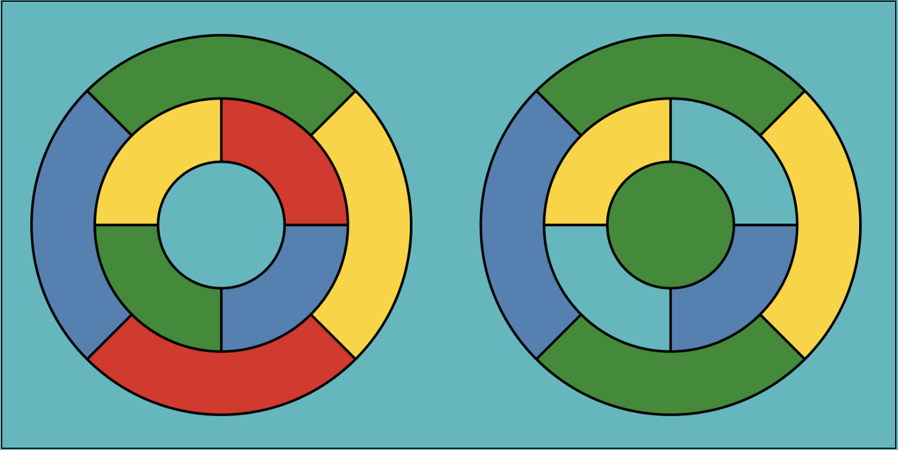

Data Structures
Data Structures CS 570 - Section D, Fall 2022
Click for Tentative Class Schedule & HW Assignments
General Information
| Instructor: | Dr. Jacek Ossowski |
| Email: | jossowsk@stevens.edu |
| Lectures | Mondays 3:30pm - 6:00pm |
| Class Format: | in-person |
| Location: | Edwin A. Stevens 330 |
| Office Hours: | Thursdays 1pm - 3pm (Discord) |
Other Q&A resource: peer discussion forum will be set up on discord.com. See the "Software" section for instructions on joining our class on Discord.
Textbook
Zybooks Data Structures -- this is an online textbook that you will need to purchase through Canvas. The purchaing process is as follows:
- Click any zyBooks assignment link in Canvas (for example, you could click on PA1 in the "Assignments" section)
(Do not go to the zyBooks website and create a new account)
- Subscribe
All other course materials will be posted on Canvas.
Description of Course
CS 570 a course on fundamental data structures and algorithms. We will explore this fascinating topic using the Java programming language and object oriented design. Our programs and exercises will work with lists, stacks, queues, trees, heaps, hash tables and more. In terms of algorithms, we will focus on searching and sorting as well as a general algorithmic paradigm, recursion. To assess an algorithm's performance we will learn how to apply the asymptotic complexity analysis. You will also practice how to apply the learned structures and algorithms to some interesting computational problems.
Homework
There will be three types of homework assignments:
-
Participation Activities -- these are sets of simple questions in zyBook textbook that you answer when reading the required sections. You will be allowed to attempt each question as many times as you like. To enhance your understanding of the material, you will be expected to complete these activities before the given module is formally covered in class.
- Challenge Activities -- more serious zyBook activities that will require some thought and will be due a week after a given module has been covered.
- Programming Assignments -- 6 larger programming assignments that are independent of the textbook. You will have more than two weeks to complete those.
- No late homework will be accepted.
- However, the worst two PAs and the worst two CAs will not count towards your final grade.
- Similarly. the worst programming homework will be disregarded.
- Tentative due dates are listed on the course's approximate schedule.
- In this course, the programming assignments are required to be completed individually. No collaboration is allowed.
Exams
- There will be one midterm exam and a final exam.
-
We will have short (≤ 10 min) in-class quizzes testing whether you are following the basic concepts given in the lectures. Quizzes will account
for 5% of your final grade. The worst two quizzes will be dropped at the end of the semester.
- There will be no make-up exams given after the exam date. If you know in advance that you will have to miss an exam, you must check with me (in advance) to avoid getting a zero for that exam. In case of an illness on an exam date, please contact me as soon as possible, so that appropriate arrangements can be made.
Attendance
Since it is important to attend lectures, I will be taking attendance. You will be allowed three unexcused absences during the semester. Attendance will account for 5% of
your final grade.
Grading
| Attendance |
5% |
| Participation Activities |
7.5% |
| Challenge Activities |
7.5% |
| In-class Quizzes: |
5% |
| Programming Assignments: |
30% |
| Midterm Exam: |
20% |
| Final Exam: |
25% |
As mentioned worst two quizzes, two worst written assignments will not be counted towards your grade.
Grading Scale
| Numeric Grade |
Letter Grade |
| 93+ |
A |
| 90-92 |
A- |
| 87-89 |
B+ |
| 83-86 |
B |
| 80-82 |
B- |
| 77-79 |
C+ |
| 73-76 |
C |
| 70-72 |
C- |
| 67-69 |
D+ |
| 63-66 |
D |
| 60-62 |
D- |
| 0-59 |
F |
Discord Discussion Forum
If you have a question regarding the material or homework, chances are that somebody might have encountered that problem already. Check our Discord discussion forum first and post your question there if it has not been answered yet (see the "Software" section for setup).
If you don't get the answer this way in a reasonable amount of time, (only then) you can ask me that question outside of my office hours. Naturally, you can ask me any question regarding the course during my office hours.
Hardware and Technical Requirements
The hardware/technical requirements for this course include:
-
Computer satisfying the following minimum technical requrements
- In general, the device must be portable, sufficiently up to date, and have adequate memory and storage so that it can run the current version of its operating system
- Intel Core i5 or AMD Ryzen 5 processor (i7 or Ryzen 7 preferred)
- 8GB of RAM (16 GB preferred)
- Mac OS 10.15 or Windows 10
- 256 GB SSD hard drive (512 GB preferred)
- Wireless networking adapter
- Camera and microphone
-
Dedicated access to high-speed internet with a minimum speed of 1.5 Mbps (4 Mbps or higher is recommended).
-
Webcam (for proctoring during remote exams)
-
Microphone (a working microphone in your computer is fine)
-
Respondus Lockdown Browser (if exams are held remotely)
-
If exams are held remotely, it will be your responsibility to ensure that all the involved technology works as expected (i.e., your computer, internet, webcam, etc.).
-
Fortunately, all students I gave a remote exam to in the past were able solve all their technical issues. Being able to set up the equipment needed for remote learning and
assure that it works properly has become a prerequisite of academic coursework.
Software
For information on managing your privacy at Stevens Institute of Technology, visit the University’s Privacy page.
NOTE: This course has NOT been designed for use with mobile devices.
Communication
- The homework assignments, solutions, readings, and announcements will be posted on Canvas.
- Please ensure that you can receive emails from Canvas so that you can get course announcements.
- Discussions will take place on Discord. I will also answer questions Discord, but I encourage students to try to answer questions jointlyg as well.
- Do not ask for or provide actual solutions to homework problems on Discord.
- Personal questions should be sent directly to my email or handled in person during office hours.
- I will not answer emails from Friday 6pm to Monday 9am.
Collaboration
All homework assignments must be completed individually.
-
Do not use other resources (outside of your textbooks and collaborators) to find partial or whole homework/test problems' solutions. This includes searching for whole or partial solutions on the Internet.
-
Posting the problems assinged in this course on the Internet (say, Reddit, Chegg, etc.) is not allowed.
Academic Integrity
Undergraduate Honor System
Enrollment into the undergraduate class of Stevens Institute of Technology signifies a student's commitment to the Honor System. Accordingly, the provisions of the Stevens Honor System apply to all undergraduate students in coursework and Honor Board proceedings. It is the responsibility of each student to become acquainted with and to uphold the ideals set forth in the Honor System Constitution. More information about the Honor System including the constitution, bylaws, investigative procedures, and the penalty matrix can be found online.
The following pledge shall be written in full and signed by every student on all submitted work (including, but not limited to, homework, projects, lab reports, code, exams) that is assigned by the course instructor. No work shall be graded unless the pledge is written in full and signed.
“I pledge my honor that I have abided by the Stevens Honor System.”
Reporting Honor System Violations
Students who believe a violation of the Honor System has been committed should report it within ten business days of the suspected violation. Students have the option to remain anonymous and can report violations online
Graduate Student Code of Academic Integrity
All Stevens graduate students promise to be fully truthful and avoid dishonesty, fraud, misrepresentation, and deceit of any type in relation to their academic work. A student’s submission of work for academic credit indicates that the work is the student's own. All outside assistance must be acknowledged. Any student who violates this code or who knowingly assists another student in violating this code shall be subject to discipline.
All graduate students are bound to the Graduate Student Code of Academic Integrity by enrollment in graduate coursework at Stevens. It is the responsibility of each graduate student to understand and adhere to the Graduate Student Code of Academic Integrity. More information including types of violations, the process for handling perceived violations, and types of sanctions can be found on graduate academics site .
Special Provisions for Undergraduate Students in 500-level Courses
The general provisions of the Stevens Honor System do not apply fully to graduate courses, 500 level or otherwise. Any student who wishes to report an undergraduate for a violation in a 500- level course shall submit the report to the Honor Board following the protocol for undergraduate courses, and an investigation will be conducted following the same process for an appeal on false accusation described in Section 8.04 of the Bylaws of the Honor System. Any student who wishes to report a graduate student may submit the report to the Dean of Graduate Academics or to the Honor Board, who will refer the report to the Dean. The Honor Board Chairman will give the Dean of Graduate Academics weekly updates on the progress of any casework relating to 500-level courses. For more information about the scope, penalties, and procedures pertaining to undergraduate students in 500-level courses, see Section 9 of the Bylaws of the Honor System document, located on the Honor Board website.
Specific Types of Violations
The collaboration policy described above is designed to allow students the resources to succeed while ensuring they learn and master the material. If you are unsure whether something is acceptable according to the collaboration policy, talk to me!
Violations of this policy will be considered violations of the academic integrity policy and will be reported to the appropriate school offices.
Consequences may include (but are not limited to) failure of the class. Academic misconduct includes, but is not limited to:
- copying or plagiarizing solutions in whole or in part from fellow students or other sources
- screen sharing text/code on any platform (Discord, VS Code LiveShare, …) counts as sharing the solution.
- unintentionally sharing solutions through platforms mentioned above, or sharing more of the solution than you intended.
- it is your responsibility to be mindful of who can access your files and which files they can access;
note that it may be easy for strangers to access voice channels on a Discord server and that many code/text sharing platforms (e.g. VS Code LiveShare)
give participants access to all files and directories within the directory you share.
- cheating on the exams
- discussing any information about exams with classmates before all grades are posted.
- posting questions on forums like Reddit, StackOverflow, or Chegg. You can refer to previously posted questions on these forums, but not create new ones for this course.
Learning Accomodations
Stevens Institute of Technology is dedicated to providing appropriate accommodations to students with documented disabilities. The Office of Disability Services (ODS) works with undergraduate and graduate students with learning disabilities, attention deficit-hyperactivity disorders, physical disabilities, sensory impairments, psychiatric disorders, and other such disabilities in order to help students achieve their academic and personal potential. They facilitate equal access to the educational programs and opportunities offered at Stevens and coordinate reasonable accommodations for eligible students. These services are designed to encourage independence and self-advocacy with support from the ODS staff. The ODS staff will facilitate the provision of accommodations on a case-by-case basis.
Student Disability Files are kept separate from academic files and are stored in a secure location within the Office of Disability Services. The Family Educational Rights Privacy Act (FERPA, 20 U.S.C. 1232g; 34CFR, Part 99) regulates disclosure of disability documentation and records maintained by Stevens Disability Services. According to this act, prior written consent by the student is required before our Disability Services office may release disability documentation or records to anyone. An exception is made in unusual circumstances, such as the case of health and safety emergencies.
For more information about Disability Services and the process to receive accommodations, visit https://www.stevens.edu/office-disability-services. If you have any questions please contact: Phillip Gehman, the Director of Disability Services Coordinator at Stevens Institute of Technology at pgehman@stevens.edu or by phone (201) 216-3748.
Inclusion Statement
Stevens Institute of Technology believes that diversity and inclusiveness are essential to excellence in academic discourse and innovation. In this class, the perspective of people of all races, ethnicities, gender expressions and gender identities, religions, sexual orientations, disabilities, socioeconomic backgrounds, and nationalities will be respected and viewed as a resource and benefit throughout the semester. Suggestions to further diversify class materials and assignments are encouraged. If any course meetings conflict with your religious events, please do not hesitate to reach out to your instructor to make alternative arrangements.
You are expected to treat your instructor and all other participants in the course with courtesy and respect. Disrespectful conduct and harassing statements will not be tolerated and may result in disciplinary actions.
Name And Pronoun Usage
As this course includes group work and in-class discussion, it is vitally important for us to create an educational environment of inclusion and mutual respect. This includes the ability for all students to have their chosen gender pronoun(s) and chosen name affirmed. If the class roster does not align with your name and/or pronouns, please inform the instructor of the necessary changes.
Mental Health Resources
Part of being successful in the classroom involves a focus on your whole self, including your mental health. While you are at Stevens, there are many resources to promote and support mental health. The Office of Counseling and Psychological Services (CAPS) offers free and confidential services to all enrolled students who are struggling to cope with personal issues (e.g., difficulty adjusting to college or trouble managing stress) or psychological difficulties (e.g., anxiety and depression). Appointments are strongly encouraged and can be made by phone (201-216- 5177) or in-person (on the 7th floor of the Howe Center). CAPS is open from 9:00 am – 5:00 pm Mondays, Wednesdays, Thursdays and Fridays and from 9:00 am – 7:00 pm on Tuesdays during the Fall and Spring semesters.
Emergency Information
In the event of an urgent or emergent concern about the safety of yourself or someone else in the Stevens community, please immediately call the Stevens Campus Police at 201-216-5105 or their emergency line at 201-216-3911. These phone lines are staffed 24/7, year round. Other 24/7 resources for students dealing with mental health crises include the National Suicide Prevention Lifeline (1-800-273-8255) and the Crisis Text Line (text “Home” to 741-741). If you are concerned about the wellbeing of another Stevens student, and the matter is not urgent or time sensitive, please email the CARE Team at care@stevens.edu. A member of the CARE Team will respond to your concern as soon as possible.
Copyright
My lectures, notes, handouts, and displays are protected by state common law and federal copyright law. They are my own original expression. Students may take notes. In addition, students will be consulted before using their solutions either with or without their name.
Last modified: September 12, 2022
{kind=link}